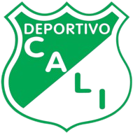

Datos Importantes
El Deportivo Cali fue fundado en 1912 y es uno de los clubes más importantes del fútbol colombiano. A lo largo de su historia, el equipo masculino ha sido protagonista en el campeonato nacional, destacándose por su juego ofensivo y su constante presencia en las fases finales de la liga. Ha ganado 10 títulos de liga, consolidándose como uno de los equipos más exitosos del país. El club ha sido hogar de grandes figuras del fútbol colombiano, quienes han dejado huella tanto en el ámbito local como internacional.
El Deportivo Cali ha destacado en el fútbol femenino, logrando 2 títulos de liga y consolidándose como uno de los clubes más fuertes en esta disciplina. Desde su creación, ha impulsado el desarrollo del fútbol femenino, con un equipo bien organizado y con jugadoras que han sido protagonistas en competiciones nacionales.